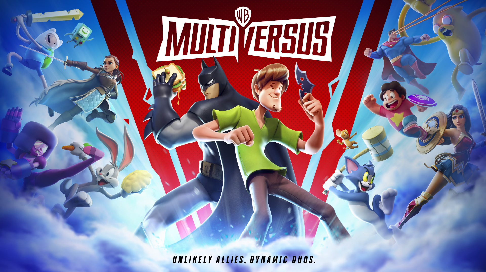
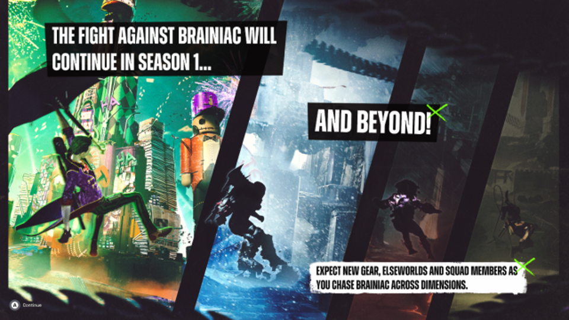

Depuis sept ans qu’on l’a entre les mains, on n’y fait plus attention mais il est tout de même déprimant de subir toujours et encore des micro-ralentissements sur la Switch, y compris — et surtout — dans les jeux first party de Nintendo. La démo de Princess Peach Showtime en est plein, et pas nécessairement lorsque des tas de personnages sont à l’écran.
Image : Nintendo
Ces ralentissements sont visibles lors de certains passages scriptés, par exemple lors de la transformation de la princesse ou quand le jeu laisse la main au joueur. La cible visée par Showtime (les plus jeunes) n’y verra sans doute que du feu, mais il est tout de même malheureux que Nintendo et le studio Good-Feel qui a développé le titre n’aient pas su régler le problème avant la sortie du jeu. Certes, d’ici sa sortie le 22 mars, il est toujours possible qu’une mise à jour de dernière minute vienne régler le problème, mais le doute est permis.
Ces ralentissements sont malheureusement chroniques dans de nombreux jeux édités par Nintendo et par d’autres studios. La Switch 2 fera-t-elle mieux dans ce domaine ? On ne peut que l’espérer, en tout cas ce Princess Peach Showtime montre s’il en était encore besoin qu’il est grand temps pour le constructeur de passer à une console plus puissante.
Image : Nintendo
Quant au jeu en lui-même, il s’annonce comme une collection de mini-jeux dans lesquels la princesse Peach va jouer de l’épée, du rouleau à pâtisserie ou de la loupe de détective, chacune des transformations amenant son propre gameplay. Par conséquent, on en aimera davantage un plutôt que l’autre ; le niveau « Peach Pâtisserie » ressemble à un jeu mobile mal fichu pour ce qui me concerne, mais je ne suis plus dans la cible !
La forme finale de Warner Bros Discovery est en phase d’approche : le géant du divertissement veut chiper la place d’Electronic Arts et d’Activision au classement des entreprises les plus détestées au monde ! Et il faut bien avouer que si c’est son objectif, alors le chemin lui est largement ouvert.
Sur un coup de tête (probablement fiscal), le groupe a ainsi décidé de retirer de nombreux jeux de Steam et du PlayStation Store. Ces titres, parmi lesquels Rick and Morty: Virtual Rick-ality, Fist Puncher, Soundodger+, Headlander ou encore Duck Game, sont édités par le studio Adult Swim — propriété de WB Discovery — et développés par des indépendants. Ce sont plus de 18 jeux qui vont disparaitre corps et biens dans les 60 prochains jours, a confirmé Matt Kain, un des développeurs de Fist Puncher.
Rick and Morty: Virtual Rick-ality.
L’entreprise a décidé qu’il n’était pas question de transférer le jeu vers le compte Steam du développeur. Studio Bean, créateur de Soundoger+, a confirmé la mauvaise nouvelle et la mauvaise volonté de WB Games qui apparemment, refuse de lancer la procédure de transfert par manque de ressources. Une procédure qui prend 3 clics et 2 minutes.
Il y a néanmoins un peu d’espoir pour ces développeurs : Studio Bean devrait finalement être en mesure de publier son jeu par ses propres moyens sur Steam, au prix du retrait de toutes références à Adult Swim (et le jeu repartira de zéro sur la boutique, perdant ainsi tout son historique). Bizarre, mais c’est un moindre mal non seulement pour les joueurs, mais aussi pour la préservation des jeux.
Fist Puncher.
WB Discovery est coutumier du fait : le groupe a en effet annulé la sortie de plusieurs films quasiment terminés, dont Batgirl et Coyote vs. Acme, et retiré des séries sur des plateformes de streaming, a priori pour de bêtes histoires d’impôts.
Toujours au rayon du jeu vidéo, WB Discovery a récemment martelé sa volonté d’« ajuster » sa stratégie vers les jeux mobiles et le jeu service. « Nous renforçons notre engagement dans le domaine des jeux », a affirmé J.B. Perrette le patron chargé du jeu vidéo au sein de la société pendant une conférence Morgan Stanley (un moment parfait pour s’adresser aux actionnaires fans de jeux vidéo…).
« [C’est] un secteur où il existe encore de nombreuses opportunités de croissance que nous pouvons exploiter grâce à la propriété intellectuelle que nous possédons et aux capacités de notre studio. Nous occupons une position unique, à la fois en tant qu’éditeur et développeur de jeux », poursuit-il. Mais pas question de tenter de refaire le carton planétaire de Hogwarts Legacy et ses 22 millions de copies l’an dernier.
WB Discovery n’est pas sûr de se refaire la cerise avec ces aventures solo AAA jugées trop « volatiles ». C’est pourquoi l’entreprise double la mise sur le marché mobile et du free to play, qui permet de multiplier à peu de frais (pour l’éditeur, du moins) toutes sortes de microtransactions. Et on a bien vu à quel point ça avait bien fonctionné avec Suicide Squad: Kill the Justice League, non ? Hum…

Multiversus est un des jeux service de WB Games qui a été plutôt bien accueilli avec son gameplay copié/collé de Smash.
« Plutôt que de simplement lancer un jeu sur console à usage unique, posons nous la question de savoir comment développer le jeu autour, par exemple, un Hogwarts Legacy ou un Harry Potter, qui soit un service en ligne où les gens peuvent vivre, travailler, construire et jouer dans cet univers de manière continue » a décrit le dirigeant.
C’est une perspective peu enthousiasmante pour de nombreux joueurs, c’est certain, mais WB Discovery marche sur du velours : le groupe détient quelques unes des plus belles franchises culturelles au monde, entre les univers de DC, Cartoon Network, Adult Swim (plus pour longtemps visiblement) Bugs Bunny et compagnie, ou encore Mortal Kombat (en passe de se transformer en jeu service) et Game of Thrones. Il serait dommage de ne pas en tirer un peu plus profit en faisant la poche des fans.
Entre le boulot, les courses et le contrôle technique de la Dacia, vous n’avez peut-être pas eu le temps de vous intéresser aux nouveautés du moment. Qu’à cela ne tienne : voici les sorties de ces derniers jours qui ont retenu notre attention.
La Switch garde la pêche
Le prochain gros jeu Nintendo sera Princess Peach: Showtime!, dont la sortie est prévue pour le 22 mars. Une démo a été mise en ligne sur la boutique de l’éditeur, révélant un jeu de plateforme en 2.5D avec quelques puzzles où chaque costume déniché change le gameplay. Le titre a visiblement été développé par le studio Good-Feel (Yoshi’s Crafted World), et les premiers retours sur Reddit annoncent un jeu sympa, mignon, mais peut être un poil trop facile. Ça tombe bien qu’il y ait une démo, donc.
Image : Nintendo
Les fonds de tiroir d’EA sur Steam
Quelqu’un chez EA a visiblement retrouvé la clé de la cave avant d’aller mettre le nez dans les vieux cartons. L’éditeur a ressorti tout un tas de vieilleries sur Steam, allant de SimCity 3000 aux Dungeon Keeper en passant par les deux Populous et même le plus récent The Saboteur. Des « grands classiques inoubliables » vendus en promo pour l’occasion, qui seront parfaits pour occuper un week-end pluvieux ou à garder dans un coin du SSD de votre Steam Deck.
Cozymmobilier
Si vous avez aimé Townscaper, alors vous devriez aimer SUMMERHOUSE, un nouveau venu dans la catégorie des jeux de construction mignons et cozy parfaits pour se relaxer après une journée au service du grand capital. Il s’agit de mettre sur pied de petites habitations minimalistes dans des décors en pixel-art. Pas d’ennemis, d’objectifs ou de règles : le but est simplement de faire quelque chose de joli en écoutant une BO reposante, tout cela pour seulement 5 € sur Steam. Notons également la sortie dans le même style de Minami Lane, sur lequel j’ai hésité à faire un article complet histoire de caler l’interdire « Deux flics à Minami » quelque part.
¡Taxi!
Taxi Life: A City Driving Simulator a pointé le bout de son pare-chocs cette semaine. Ce simulateur de taxi se déroule dans un large partie de Barcelone reproduite à l’échelle 1:1 avec pas moins de 460 km de route, ce qui promettait une expérience plutôt sympa pour le fan d’Euro Truck Simulator 2 que je suis. Malheureusement, les premiers retours sont mitigés : les clients dénoncent une IA aux fraises et des rues assez vides. On va attendre un patch histoire de voir comment ça se décante. 30 € sur Steam.
L’intriguant jeu de bagnole narratif Heading Out s’est récemment payé un trailer annonçant sa date de sortie. Le concept est alléchant étant donné qu’il s’agira d’effectuer un road trip musclé vers l’Ouest dans un univers en noir et blanc très stylisé. On nous promet une histoire prenante remplie de courses poursuites où les choix auront des conséquences, modifiant les personnages rencontrés ou encore ce que racontent les animateurs radio. Habituellement je ne suis pas du tout branché jeux de course, mais force est d’admette que la patte graphique et la BO très américano-américaine sont sexy. Sortie le 7 mai prochain sur Steam.
Une raison de moins d’acheter une PS5 : le très bien accueilli Ghost of Tsushimaarrivera sur PC dans sa version Director’s Cut le 16 mai. Affichant un score de 83/100 sur Metacritic, ce jeu de samouraï en monde ouvert a marqué les esprits depuis sa sortie en 2020. Le portage inclut le jeu complet ainsi que l’extension Île d’Iki et le mode coop multijoueur en ligne Legends. Un trailer a été mis en ligne si vous voulez voir ce que ça donne
Image : Sony
Cette nouvelle version est signée Nixxes, un studio racheté par Sony en 2021 à qui l’on doit de sympathiques portages de jeux PS5 récents (Ratchet & Clank: Rift Apart, Horizon Forbidden West, les derniers Spider-Man…). On nous promet « de multiples paramètres et préréglages graphiques » en plus d’une fréquence d’image débridée. La prise en charge du combo clavier/souris est au programme, tout comme celle des technologies DLSS 3, FSR 3 et XeSS (à vos souhaits). Le titre a été optimisé pour les résolutions 21:9 / 32:9, et est même compatible avec les écrans 48:9 de nos gros bourgeois de lecteurs ayant chez eux une configuration triple écrans.
Cette version Director’s Cut inclut le doublage japonais, les commentaires des développeurs ainsi que le mode Kurosawa en noir et blanc. La fiche du jeu est d’ores et déjà en ligne sur Steam et sur l’Epic Game Store, où il est possible de passer une précommande pour 60 €. Les joueurs qui sautent le pas avant la sortie auront le droit à une poignée de soins et à une monture exclusive en New Game+.
Les shoot’em up parlent directement au cerveau reptilien. Difficile en effet de faire plus simple et plus efficace qu’un bon vieux shmup ! Certes, depuis ses débuts primitifs en 1978 avec Space Invaders, le genre s’est considérablement élargi, affiné, raffiné même, et tout simplement anobli. Mais au bout du compte, c’est toujours un vaisseau ou un bidule à diriger au milieu d’un tsunami de projectiles et d’ennemis.
Et c’est certainement la catégorie de jeux le mieux représenté sur mes machines à jouer, avec un net penchant pour les shmups des années 90 — le sublimement idiot Prehistoric Isle 2 est un chouchou — et évidemment, les bullet hell de Cave (DoDonPachi DaiFukkatsu, chef d’œuvre évidemment).
Sous leur apparence simple, les shoot’em up cachent des trésors de sophistication, certains plus que d’autres évidemment, qui demandent de s’y atteler sérieusement pour pouvoir en tirer tout le suc. Bref, quand on lance un Radiant Silvergun ou Gleylancer, ce n’est pas pour tuer le temps entre deux épisodes de Netflix !
Est-ce pour autant une raison de tous les acheter ? Évidemment non. Et pourtant, c’est bien de ce mal dont je souffre, il me les faut tous même si cela fait bien longtemps que je n’ai plus le temps de tous y jouer (la honte étant que j’ai à peine touché à bon nombre d’entre eux). Attendez, Natsuki Chronicles est à 1 € sur Steam en ce moment ?! Foutu cerveau reptilien.
Un nouveau jeu dans l’Arkhamverse qui suit une bande de bras cassés de DC prêts à en découdre avec la Justice League ? Pourquoi pas. Le projet était intriguant et puis c’était Rocksteady à la barre, les créateurs des meilleurs jeux de superhéros de tous les temps !
Le jeu Suicide Squad
Il y avait moyen d’y croire : le studio Rocksteady, alors tout auréolé du succès des jeux de la saga Batman: Arkham, avait annoncé la mise en chantier de Suicide Squad: Kill the Justice League en 20201.
Mais au fil des années de retard et des trailers, il a fallu se rendre à l’évidence : ça sentait le caca. Enfin plutôt le jeu service, ce qui pour beaucoup de joueurs est la même chose : les microtransactions, skins et autres costumes hors de prix sont assez peu appréciés dans ce bas monde.
Mais enfin, après toutes ces années d’attente et d’angoisse, le voilà enfin le nouveau chapitre de l’Arkhamverse… transformé en looter shooter en coop 4 joueurs, un gameplay aux antipodes des jeux Batman où un type costumé de mauvaise humeur tabasse à lui tout seul la pègre de Gotham à grand coup de latte.
Précédé d’une réputation épouvantable — la campagne marketing a été désastreuse —, Suicide Squadsort le 2 février auprès du grand public et très vite, c’est l’hallali. Au lendemain du lancement, le nombre de joueurs sur Steam atteint les 13 459 selon SteamDB, un sommet que le jeu ne retrouvera plus jamais.
Source : SteamDB
Pour donner un ordre d’idée de la catastrophe industrielle, le record de Marvel’s Avengers, comparable à Suicide Squad avec son univers de superhéros et son modèle économique, affiche rien de moins que le double (31 165). Et Marvel’s Avengers n’a pas vraiment été qualifié de chef d’œuvre…
Alors certes, le jeu est resté quelques jours numéro 1 du classement de la PS5 (que Steam ne prend évidemment pas en compte), mais il a déguerpi très vite. Il a aussi passé une tête dans le top 20 de la Xbox, mais sans y faire plus d’étincelles.
Et aujourd’hui, Suicide Squad louche ostensiblement vers le seuil des 500 joueurs en simultané sur Steam. Pour Warner Bros Games, l’éditeur du jeu, c’est un cataclysme : par essence, les jeux service doivent absolument avoir un certain nombre de joueurs car sinon, qui pourrait envier cette skin achetée à prix d’or ? La rentabilité du jeu est dans les chaussettes.
WG Games ne donne pas de chiffre, mais le directeur financier a admis que le jeu n’avait pas été à la hauteur des attentes de l’éditeur. Il faut dire que la comparaison n’est pas en faveur de Suicide Squad : l’an dernier à la même période, WG Games cartonnait avec Hogwart’s Legacy, qui a gagné la palme de jeu le plus vendu de l’année devant Call of Duty !
Et pour Rocksteady, l’affaire est très mauvaise également. On ignore le budget exact de Suicide Squad, mais personne ne sera étonné d’apprendre qu’il tourne autour des 150 à 200 millions de dollars vu le nombre d’années de développement — et c’est sans compter ce fichu marketing. Alors que l’industrie du jeu vidéo essuie une purge de talents sans précédent, le studio pourrait bien être frappé aussi par des coups de hache dans ses effectifs.

À quand la saison 1 ?
Quant aux joueurs, c’est la soupe amère également. Une petite communauté de fans s’est formée autour de Suicide Squad, qui apprécie réellement les qualités du jeu (il y en a !). Et ils attendent maintenant avec impatience les prochaines saisons, avec une première livraison prévue en mars mettant en vedette le Joker. WG Games n’a toujours pas annoncé de date de lancement. Et la promesse d’une année de contenus supplémentaires au minimum parait maintenant impossible à tenir au vu du désastre financier.
Le projet avait en fait débuté dès 2015 sous l’égide de WB Montréal, mais le développement s’est arrêté au bout d’un an. ↩︎
Tout roule pour Balatro, ce jeu mélangeant poker et roguelike d’ores et déjà considéré comme une potentielle drogue dure par la FDA américaine. Sorti le 25 février dernier, le jeu a rapporté 1 million de dollars en 8 heures, un très joli score pour un projet indé créé par un unique développeur. Plus de 250 000 copies se sont déjà écoulées sur PC, Switch, PS5 et Xbox. Une version Mac est dans les tuyaux, tandis qu’un portage mobile « pourrait arriver après le lancement officiel ».
Pas besoin d’être Patrick Bruel pour s’amuser sur Balatro. L’objectif est de recréer les mains du poker afin de faire un maximum de points, ceux-ci étant multipliés par différents jokers débloqués en cours de route. L’un va octroyer plus de points en cas de paire, là où un autre autorisera à faire des quintes (5 cartes à la suite) avec seulement 4 cartes. La progression se fait sur un système de niveaux en 3 parties, la dernière étant un boss appliquant différents malus pouvant réduire le score.
Ça a l’air compliqué, mais il ne faut que quelques parties pour devenir accro. Le titre est vendu 14 € sur Steam, sans achat in-app ni mécanique de free-to-play. Notons que le jeu est temporairement indisponible sur certaines boutiques dont le Nintendo Store européen, Balatro ayant été pris à tort pour un véritable jeu d’argent avant de se voir passé 18+ par un régulateur peu regardant. L’éditeur promet que la situation devrait revenir à la normale prochainement.
Était-ce une bonne idée de lancer Sonic Superstars trois jours avant Super Mario Bros Wonders ? Probablement pas. Et n’importe qui aurait pu prédire que l’ombre imposante des aventures du plombier bondissant allait plonger dans l’obscurité totale le revival 16 bits et 3D du hérisson speedé.
Enfin, n’importe qui, sauf Sega ! Durant ses résultats financiers, l’éditeur a finalement admis que ça ne s’était pas vraiment passé comme il l’espérait. Haruki Satomi, le patron de Sega Sammy, s’est réjoui de l’accueil positif de Sonic Superstars, mais voilà : « le moment du lancement a coïncidé avec des titres concurrents dans le même genre, et [notre jeu] est resté en deçà des prévisions initiales ».
Il ne cite pas Mario, mais enfin on imagine bien qu’il n’a pas en tête les impérissables chefs d’œuvre Skull Island: Rise of Kong et Trolls Remix Rescue, sortis eux aussi en octobre 2023. Ne soyez pas trop triste du sort de Sonic Superstars : Sega multiplie les promotions depuis le lancement du jeu qu’on peut facilement trouver à moitié prix (ce qui est peut-être le tarif auquel l’éditeur aurait dû le proposer dès le début). Il devrait finir par trouver son public.